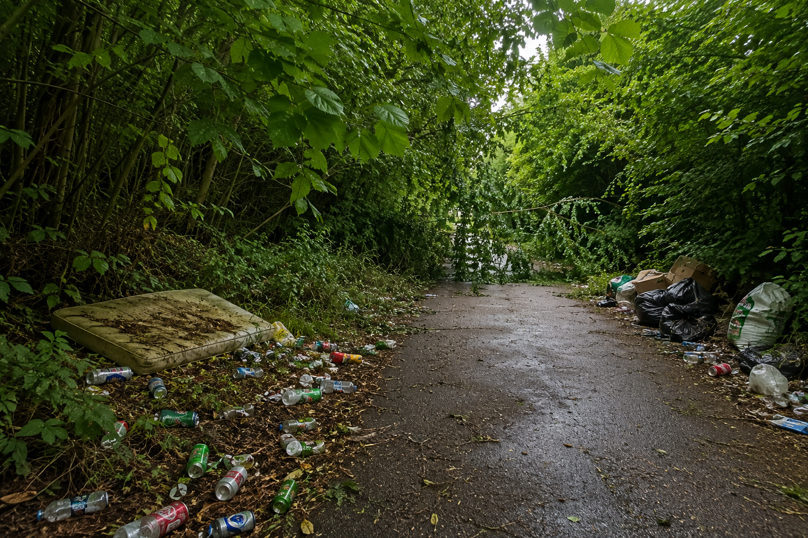
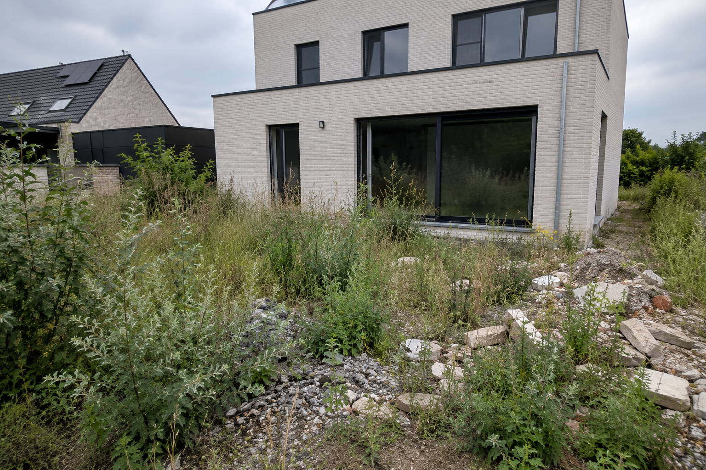

Groen Direct — interventies op aanvraag
Buiten iets stuk, vuil of in de weg?
Groen DIRECT lost het op. Vaste prijs, snelle planning, geen offertetraject.


Voor NaOmgevallen tak na storm. Een tuin die volledig dichtgegroeid is. Een berg snoeihout. Een vuile parking of verstopte afvoer. Groen DIRECT is de interventiedienst van Integraal Groen: voor alles wat buiten nú moet gebeuren, niet volgend jaarcontract.
Hoe het werkt
Vier stappen, geen wachttijd
1
Foto opladen
Upload een foto van het probleem.
2
Prijs ontvangen
Prijsindicatie of vaste prijs, meteen zichtbaar.
3
Team ingepland
Interventieteam plant een moment in.
4
Werk uitgevoerd
Voor/na-foto als bevestiging.

 Voor
Na
Voor
Na
Meld uw buitenprobleem
Groen DIRECT werkt volledig los van een eventueel jaarcontract bij Integraal Groen — u hoeft geen klant te zijn om een interventie aan te vragen.
Stuur een e-mail →